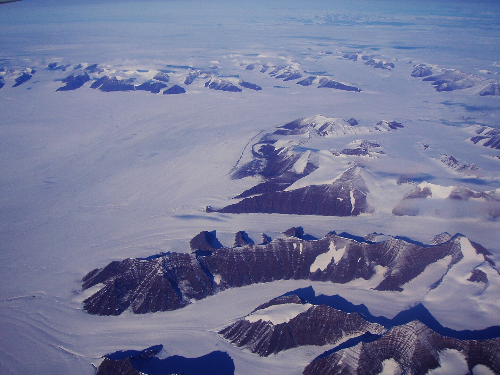

Watkins Range
Fun facts about the Watkins Range!
- The Watkins Range is entirely comprised of nunataks, which are mountains that protrude above glaciers or ice caps.
- Gunnbjørn Fjeld, the tallest peak in the Watkins Range, is also the tallest mountain above the Arctic Circle.
- The Watkins Range is entirely unpopulated. The range is entirely bare rock and ice, nothing grows there.
- Gunnbjørn Fjeld was skied for the first time in 2004 (this isn't much of a fun fact, but I had to include it so I could link the wonderful HTML page I found that documented the excursion).
Watkins Range
Aforementioned awesome webpage
